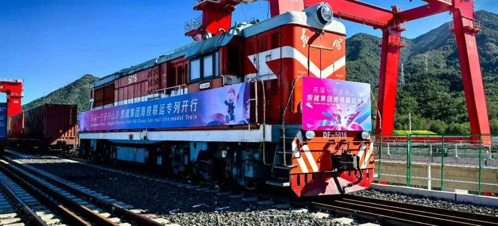
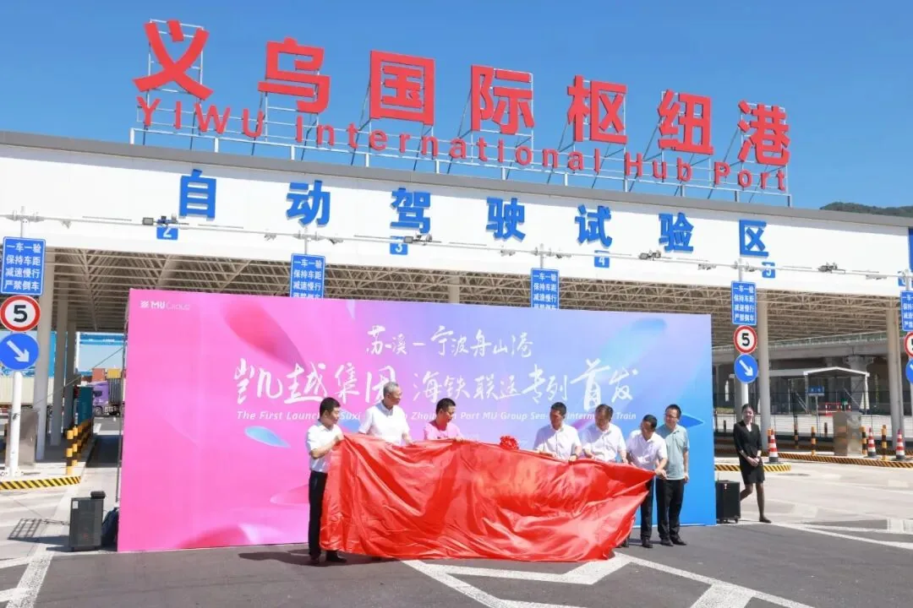
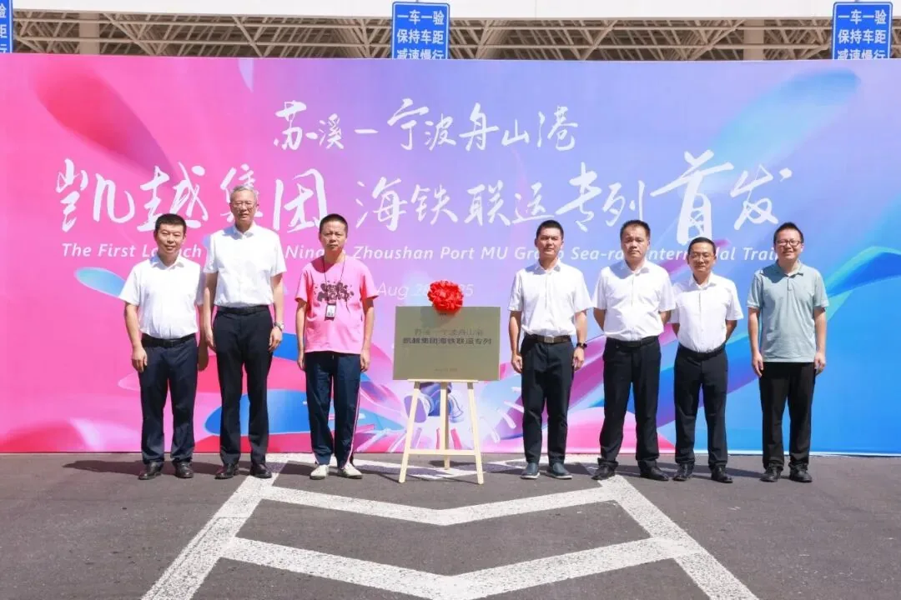

On August 28, a dedicated Suxi–Ningbo Zhoushan Port MU Group sea–rail intermodal train departed from Yiwu (Suxi) International Hub Port. The first train carried 100 TEUs of daily consumer goods, Christmas products, furniture, stationery and toys toward Ningbo Zhoushan Port.
From there, the cargo will connect with international shipping routes serving Germany, Spain, the United States, the Dominican Republic, South Africa and more than ten other markets. The launch marks the first dedicated corporate sea–rail intermodal train developed through a coordinated port–rail–enterprise model.
A more controlled path from Yiwu to the port
As Yiwu’s foreign trade continues to grow, buyers and suppliers need better control of delivery time, transport cost and operational handoffs. In July, MU Group’s Yiwu GLP logistics warehouse handled more than 100,000 cubic metres in a single month — a scale that makes coordinated, containerised transport increasingly important.
The dedicated rail service is designed to make that movement more predictable. It helps reduce integrated logistics costs, lowers the scheduling and coordination burden across different transport modes, and strengthens supply-chain stability for export programmes that need to move at scale.

What this can mean for international buyers
- More coordinated handoffs between Yiwu consolidation and port departure.
- Less operational complexity across rail, port and shipping partners.
- A steadier export rhythm for product programmes that rely on multiple suppliers.
Port services brought closer to the source
Yiwu (Suxi) International Hub Port brings key port functions into an inland rail facility. Businesses can complete important processes, including pre-release and pre-stowage arrangements, in one place before the cargo reaches the seaport.
That closer connection between inland operations and ocean schedules helps align logistics activity with global shipping windows. It can shorten the overall logistics cycle, reduce capital tied up in transit and create a more disciplined export workflow from the point of consolidation.

Built for the next stage of global delivery
Since the Yiwu (Suxi) International Hub Port entered operation, Ningbo Zhoushan Port’s sea–rail team has continued to work with customs, railway partners and key enterprises to improve on-site processes and information services. The aim is a more professional, efficient and accessible logistics channel for Chinese-made products moving to the world.
For ROYAL UNION customers, sourcing is not only about finding the right product. It is about making every stage — supplier coordination, quality control, consolidation and delivery — easier to control. Dedicated logistics capacity is one more way to build that confidence into the supply chain.
